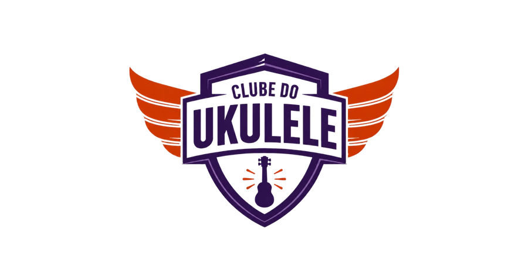

O Clube do Ukulele leva o aluno do zero à autonomia, com método sério e caminho leve. A identidade visual carrega isso: a confiança de quem sabe ensinar, com a alegria de quem toca por prazer.
A base é o índigo, que dá estrutura, calma e a sensação de curso bem-feito. O coral é o detalhe humano, aparece em doses pequenas e é o que faz alguém reconhecer a marca de longe. O laranja da logo tem uma função só, convidar para a decisão. O teal é o utilitário, cuida do que o aluno baixa e acessa.
Regra de ouro: base índigo, detalhe coral, laranja só na hora de decidir, teal no que é ferramenta. Quatro cores com quatro empregos fixos. Cor que muda de emprego vira ruído.
A logo é um escudo com asas: painel branco com o nome, contorno em índigo profundo, asas em laranja e um ukulele com raios no rodapé do escudo. As asas são laranja, nunca coral e nunca roxas.
Para cabeçalhos, assinaturas de e-mail e qualquer espaço mais largo do que alto.

Arquivos no repositório: img/logo-clube-oficial.webp (1:1) e img/logo-clube-horizontal.webp.
Pendência de arquivo: hoje a logo existe em PNG e WebP. Vale produzir o SVG em três versões (colorida, uma cor só e selo montado) para uso em impresso grande e bordado.
Cada amostra traz o contraste real medido no par em que ela é usada. Todos os pares desta página passam no WCAG AA (4,5:1 para texto normal). Isso não é detalhe: boa parte dos alunos tem mais de 45 anos.
Cada cor tem um emprego e não faz o do vizinho. É isso que impede o aluno de olhar para um vermelho e não saber se é marca, alerta ou promoção.
Índigo e coral. Dizem quem somos. Aparecem em tudo: cabeçalhos, botão primário, detalhes, ícones.
Laranja da logo. Só onde existe decisão de compra. Se aparece na área logada, perde o efeito quando importa.
Teal. Ferramenta: baixar, acessar, abrir a biblioteca. Nunca comunica emoção nem urgência.
Verde e âmbar. Falam do conteúdo, não da marca: concluído, básica, média. Sempre em versão tinta clara com texto escuro.
O erro mais comum: usar coral, laranja e vermelho na mesma tela. São três quentes que o olho lê como a mesma cor e a mensagem se embaralha. Se precisa de destaque dentro da área logada, use coral. Se é compra, laranja. Vermelho puro não existe nesta marca.
Os pares abaixo são os que aparecem de verdade nas telas. Todos medidos, todos aprovados no WCAG AA. Antes de criar um par novo, confira no WebAIM Contrast Checker.
| Onde | Par | Contraste | AA |
|---|---|---|---|
| Corpo de texto | #1F1A2B / #F5F4F7 | 15,45:1 | passa |
| Legenda, metadado | #5C5A70 / #F5F4F7 | 6,08:1 | passa |
| Título e link | #443468 / #F5F4F7 | 9,90:1 | passa |
| Botão primário | #FFFFFF / #443468 | 10,84:1 | passa |
| Tempo do índice, chevron | #B4404F / #FFFFFF | 5,55:1 | passa |
| Coral sobre fundo escuro | #E87A85 / #2D124E | 5,77:1 | passa |
| Cabeçalho de seção da aula | #4D1A20 / #FBEAEC | 12,18:1 | passa |
| Botão de download | #FFFFFF / #177A6A | 5,21:1 | passa |
| Botão de compra | #FFFFFF / #CD3701 | 5,07:1 | passa |
| Aula concluída | #FFFFFF / #25845A | 4,64:1 | passa |
| Tag dificuldade média | #8A5A00 / #FBEFD0 | 5,18:1 | passa |
| Texto secundário no escuro | #DCD6E6 / #2D124E | 11,32:1 | passa |
Três regras que resolvem 90% dos casos: coral cheio nunca vira texto em fundo claro, use o coral forte. Texto sobre fundo escuro usa cor sólida, não opacity. Amarelo e verde claro só existem como tinta de fundo com texto escuro por cima.
Seis tipos, seis funções. Os três primeiros são a mesma cor de marca em pesos diferentes, os três últimos têm função própria.
Três famílias, três papéis. Nenhuma outra fonte entra sem virar exceção documentada.
Regra de acessibilidade: corpo nunca abaixo de 16px, entrelinha 1.6 ou mais, e largura máxima de 700px por parágrafo. Grande parte dos alunos passa dos 45 anos e lê no celular.
Profundidade se faz com três camadas empilhadas, não com sombra pesada.
O fundo lilás claro aquece a tela e amarra tudo à marca. Sobre ele entram blocos de superfície e, por cima, os cards brancos. Sombra só como véu longo e discreto, do tipo 0 20px 44px -30px. O fundo da página nunca é branco puro.
Este é o padrão real das aulas na Cademí, gerado pelo Apps Script. As classes vivem sob a raiz .aula-comum e as cores são travadas com !important, porque a plataforma injeta CSS global por cima.
Cabeçalho no degradê 135deg, #443468 → #2D124E, eyebrow coral, tempos do índice em coral forte, botões de material em teal. Músicas e dificuldades vindas da planilha real da Biblioteca de Músicas.
O ambiente logado. Aqui não existe laranja: quem já entrou não precisa ser convidado a comprar. O índigo conduz a navegação, o coral marca o progresso e o teal cuida do material.
Vitrines reais da Cademí: Central do Aluno, Trilha Principal, Biblioteca de Músicas, Missão Ukulele e Cursos e Materiais Extras. Contagens vindas da planilha da biblioteca.
São dois eixos diferentes e não podem virar a mesma coisa visualmente.
Só dois valores existem no acervo: Básica e Média. Tinta clara com texto escuro, sempre.
Cinco degraus, do Iniciante 0 ao Intermediário 2. O nível é escala, não semáforo: usa um índigo só e se diferencia pelo texto. Colorir cada degrau faria o aluno achar que "vermelho" é perigo.
Por que não existe "avançado" em vermelho: o acervo não tem esse valor, e um vermelho ao lado do coral e do laranja cria três quentes competindo. Se um dia aparecer um terceiro grau de dificuldade, ele entra em índigo cheio, não em vermelho.
Aqui o laranja trabalha no habitat dele: fundo índigo profundo, coral no destaque da promessa, laranja só nos botões que levam ao checkout.
Mesmo que você nunca tenha pegado num ukulele antes. O método te guia do zero, no seu ritmo, com correção do professor.
Cada música em pedaços pequenos e possíveis.
Repetição inteligente até a mão soltar.
A música flui e o som sai limpo.
Headline, método, preço e garantia são os da página no ar. O laranja aparece duas vezes na página inteira, sempre para o mesmo destino.
A paleta acima é o alvo. Parte já está no ar, parte não. A troca é gradual e cada item é independente, ninguém precisa parar nada para o próximo funcionar.
#177A6A, que passa no contraste com texto branco.#E87A85 (tempos do índice, chevron) troca para #B4404F. O coral claro continua nos preenchimentos e no eyebrow sobre o degradê.--download:#1F8C7A vira #177A6A no GERAR_AULA.gs e nos blocos da Cademí.linear-gradient(135deg,#443468,#2D2249) passa a terminar em #2D124E, o roxo que a logo usa de verdade.#C2410C, praticamente o mesmo laranja da logo. Unificar em #CD3701 tira uma cor do sistema sem mudar nada aos olhos.